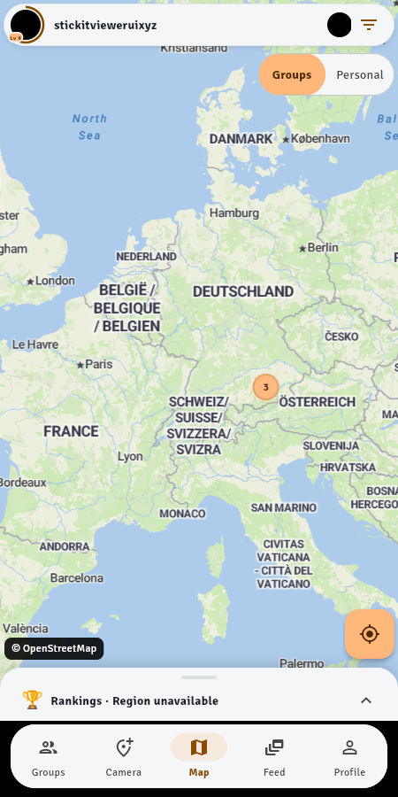
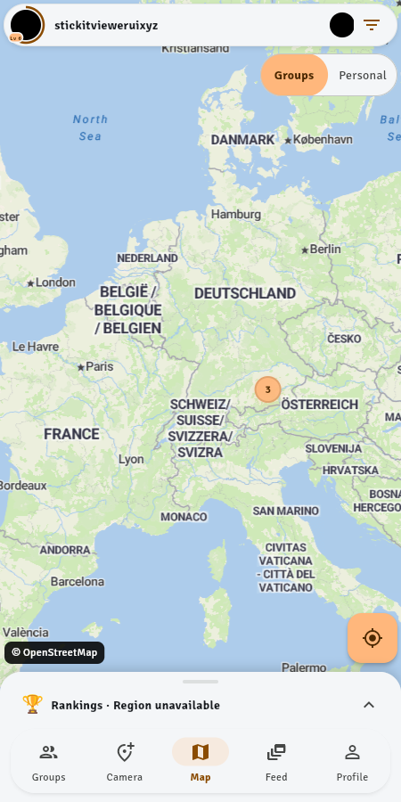
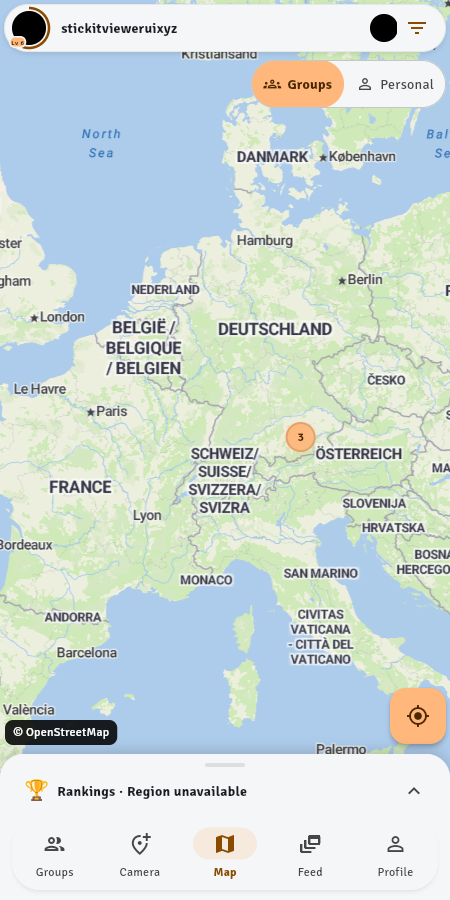
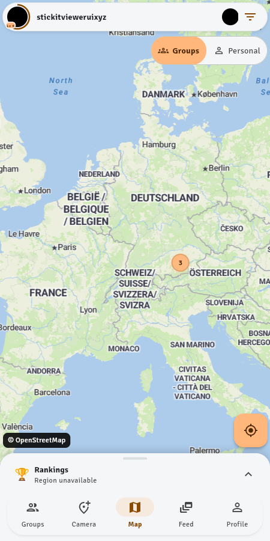
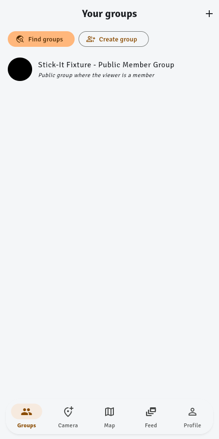
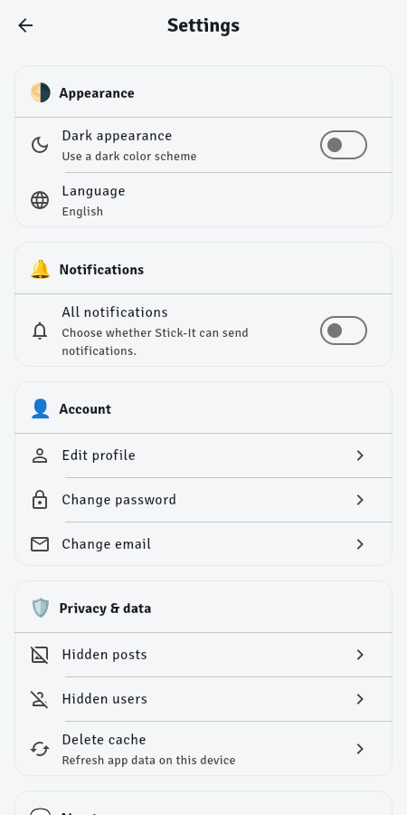
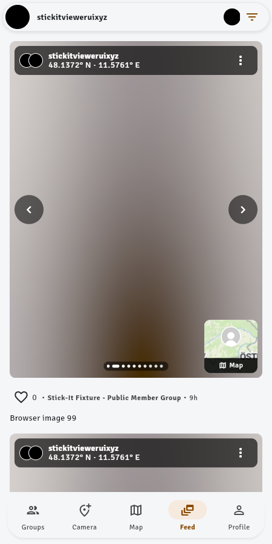
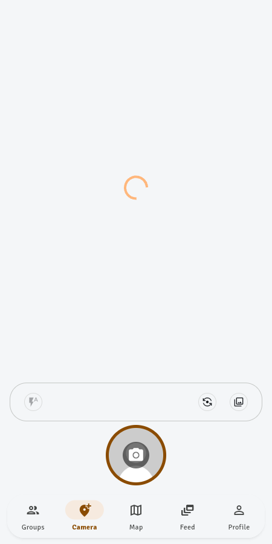
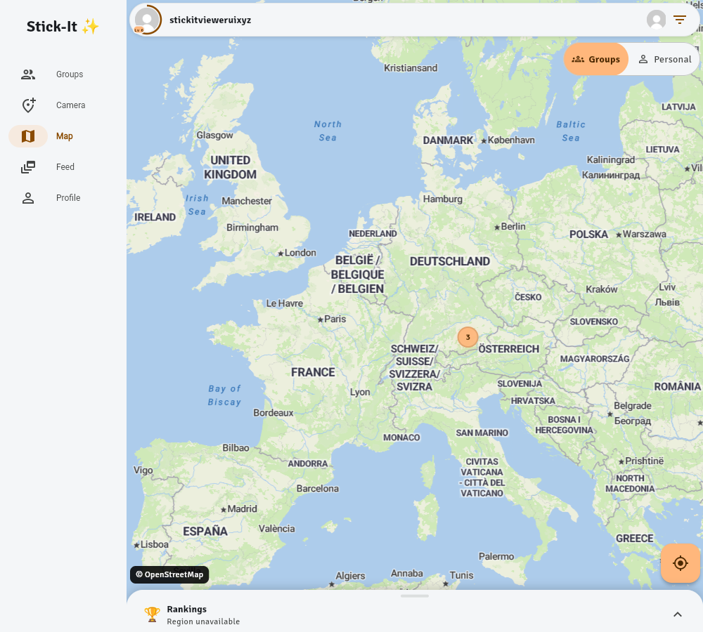

Exposed black footer and competing rounded surfaces disrupted the map and rankings composition.

Dock is clean and labels remain visible. Reviewer liked the dock but alleged header clipping; direct inspection did not reproduce that claim.

Reviewer found the group/person glyphs clearer without crowding the labels.

Reviewer found the title/status separation easier to scan, with the trophy retained.

Reviewer found the primary Find groups and secondary Create group actions clear and discoverable.

Reviewer preferred stronger titles, upright secondary text and a directional chevron.
Reviewer found compact section emojis improved scanning and matched the requested personality.

Reviewer found the compact label clarified the toggle without materially covering content.

Reviewer found the extra tray competed with the shutter and bottom navigation without making the small actions clearer.

Reviewer found inline labels and the Stick-It sparkle landmark made wide-screen wayfinding immediately scannable.
